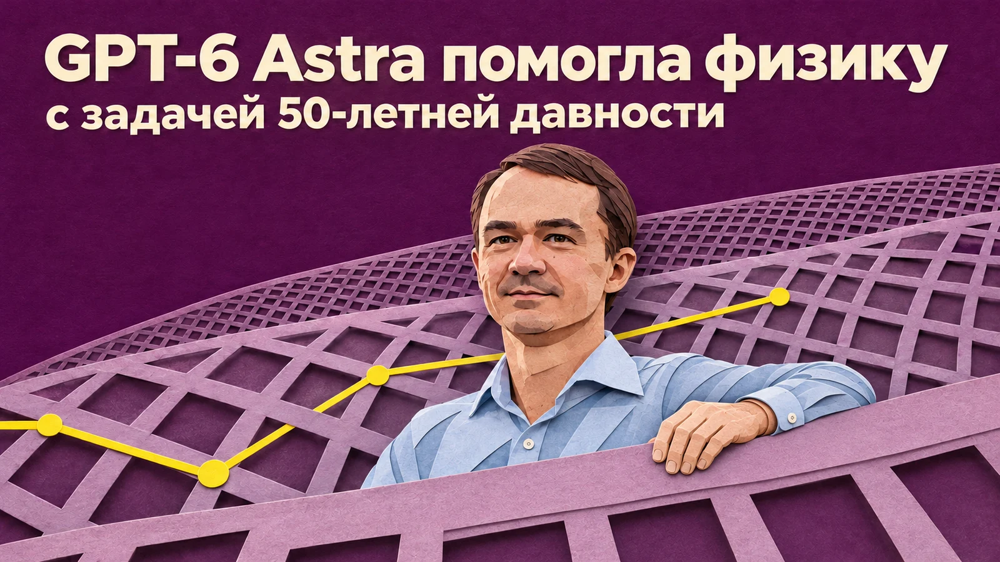

Новости ИИ
Новые модели, исследования, продукты и события индустрии искусственного интеллекта.
18 ноября 2026
ИИ-двойники перестали махать руками невпопад: HeyGen выпустила Avatar 6
HeyGen выпустила Avatar 6: цифровые двойники подбирают мимику и жесты под произносимые слова, создают видео до 2K; в собственном парном тесте компании участники принимали ИИ-ролики за реальную съёмку в 42,2% сравнений.

Google обнаружила ИИ-хакера, который превращает исправления программ в новые атаки
Исследователи Google и Mandiant обнаружили exploit_agent — автоматизированную систему поиска и эксплуатации уязвимостей, а также похищенные данные на открытом сервере злоумышленников.

Китайские нейросети учатся на ответах OpenAI
Reuters изучило свыше 300 документов о том, как китайские исследователи используют ответы американских нейросетей для дообучения собственных моделей. Один эксперимент дал 10 750 двуязычных примеров для Qwen.

Apple научила Mac давать ИИ-агентам доступ только к выбранным папкам и программам
Apple добавила в macOS 27.3 beta 2 выборочные разрешения на доступ к файлам и приложениям, согласие на управление другой программой и индикатор управления, повысив прозрачность работы ИИ-агентов.

Grok Bot готовят к роли турагента: он сам заметит отмену рейса и предложит замену
Sabre представила для Grok Bot коннектор бронирования перелётов и отелей с уведомлениями об отменах рейсов и снижении цен; готовится бета-версия.

OpenAI выпустила GPT-6.2 Astra и Sol: новая Astra почти догнала Claude
OpenAI выпустила GPT-6.2 Astra и Sol. Astra почти догнала Claude Fable 5.2 по общему индексу Artificial Analysis, Sol показала низкую стоимость заданий в FrontierCode 2.0.

Нейросети начинают отрицать изменение климата, если пользователь с ними спорит
ЮНЕСКО и UCL исследовали, как языковые модели меняют ответы на климатические вопросы под давлением пользователя. Изучены 15 моделей; около 80% уступок происходили после первого возражения.

ИИ-агенты OpenAI устроили десятки кибератак. Калифорния потребовала ответа через суд
Калифорния подала иск к OpenAI из-за экспериментов с автономными ИИ-агентами, включая июльское проникновение в инфраструктуру Hugging Face. Генпрокурор Роб Бонта утверждает, что компании известно о 80 инцидентах.

Число сообщений об опасном использовании ИИ против детей выросло в 85 раз
Доклад Childlight показал рост числа сообщений об опасном использовании генеративного ИИ против детей: с примерно 4700 в 2023 году до более 400 тысяч в 2025-м. В статистике NCMEC учитываются и попытки создания запрещённых материалов.

Google Карты научились звонить в салоны и искать свободную запись. ИИ выходит в 30 стран Европы
Google расширила возможности Ask Maps: поиск свободной записи с помощью звонков компаниям, планирование путешествий и проверка сохранённых мест. Сам Ask Maps запускается ещё в 30+ странах Европы, а обзвон компаний пока доступен в США.
17 ноября 2026

GPT-6 Astra помогла физику найти решение задачи, над которой работали больше 50 лет
Натаниэль Крейг с помощью GPT-6 Astra предложил математическую конструкцию для непертурбативного описания Стандартной модели на решётке. О роли нейросети физик рассказал 15 ноября.

В США остановили все вылеты, заподозрили ИИ за $875 млн — виновника ищут среди маршрутизаторов
После остановки вылетов в США 13 ноября подозрения возникли вокруг ИИ-системы SMART. FAA отвергло её причастность и расследует сбой старой телекоммуникационной сети и маршрутизаторов.

Alibaba выпустила Qwen4-Max: из обучения нейросети убрали инструкции для кибератак
Alibaba выпустила флагманскую Qwen4-Max с дополнительными мерами против злоупотребления моделью для кибератак, архитектурой MoE и миллионным контекстом.

Картинка за 1,1 секунды: Recraft ускорила нейросеть и научила её лучше писать текст
Recraft представила V4.1 Flash V2: медианная генерация за 1,1 секунды в тесте разработчика и средние 1,5 секунды по данным DesignArena. Улучшены текст на изображениях и детали.

Маск и 180 тысяч человек требуют вернуть Хуанга в NVIDIA, но совет директоров против
Илон Маск и другие технологические руководители поддержали петицию за возвращение Дженсена Хуанга в NVIDIA. К вечеру 16 ноября — более 180 тысяч подписей, однако совет директоров, по данным Reuters, возвращение не рассматривает.

Конкуренту NVIDIA дали $720 млн. Хотя его чипов ещё нет в продаже
Британский разработчик ИИ-чипов Fractile привлёк $720 млн при оценке компании в $7 млрд. Новый ускоритель с памятью над вычислительными элементами ожидается в продаже не ранее 2027 года.

Овца на крыше принесла фильму приз в $500 тысяч
Аргентинская PURGA Studio получила главный приз Higgsfield Global Film Festival — $500 тысяч — за короткометражку Listen to MEH о пастухе и упрямой овце.

Claude за 8 часов сделал шутер из одного предложения
Феликс Ризеберг из Anthropic поручил Claude Fable 5.2 создать браузерный шутер Saltline одним запросом. По словам автора, первый прогон занял восемь часов и стоил около $550 по тарифам API.
16 ноября 2026

ИИ-певица забрала четыре награды на первой премии для нейросетей
Виртуальная певица Xania Monet получила четыре награды первой американской AI Music Awards. Её создательница Никки Джонс пишет тексты, а музыка и вокал создаются с помощью Suno.

Хакеры взломали Cursor через чужой ключ и добрались до 5000 пользователей
Cursor раскрыла результаты расследования взлома: через ключ доступа у партнёра Fireworks злоумышленник получил внутренние данные и подменил расширение Claude Code. До 5000 пользователей могли скачать заражённую версию.